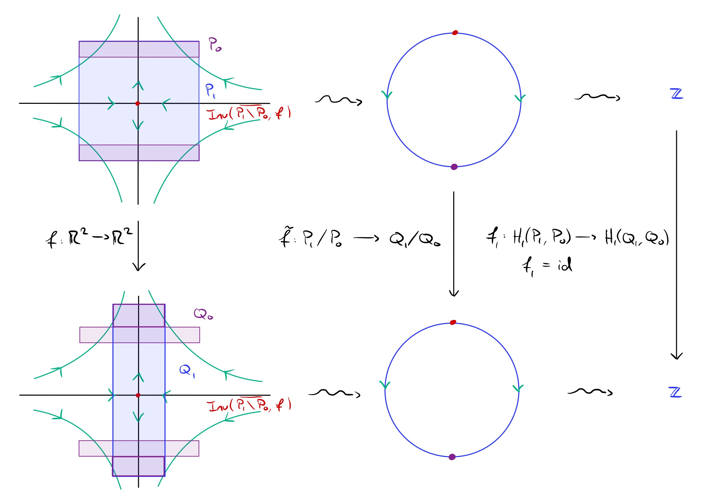

Conley Index
Mathematical Background
Continuing the discussion on Conley-Morse theory, the recurrent components of a dynamical system can be described by the Conley index.
The first notion within the Conley index theory is that of an isolating neighborhood. A compact set $N$ is called isolating if
\[\text{Inv} (f, N) = \bigcup_{n \in \mathbb{Z}} f^n (N) \subset \text{int} (N) \, .\]
A set $S$ is called an isolated invariant set with isolating neighborhood $N$ if $S = \text{Inv} (f, N)$ and $N$ is isolating.
An index pair is a tuple of sets $(P_1, P_0)$ such that where $P_0 \subset P_1$ satisfying
- (isolation) $\overline{P_1 \setminus P_0}$ is isolating,
- (forward invariance) $f(P_0) \cap P_1 \subset P_0$,
- (exit set) \overline{f(P1) \setminus P1} \cap P1 \subset P0.
This definition is quite abstract. One way to intuitively understand this definition is as follows: we find an invariant set and cover it with a set $P_1$. Within the boundary of $P_1$, we collect all points where the dynamical system points "outward", that is, points along $P_0$ leave $P_1$ immediately.
Letting $Q_1 = f(P_1)$, $Q_0 = P_0 \cup ( Q_1 \setminus P_1 )$, we consider the relative homology groups $H_\bullet (P_1, P_0)$ and $H_\bullet (Q_1, Q_0)$. We further consider the map induced by $f$ on homology
\[f_\bullet :\, H_\bullet (P_1, P_0) \to H_\bullet (Q_1, Q_0) \, . \]
Then the Conley index is the topological shift equivalence class of $\iota_\bullet^{-1} \circ f_\bullet$, where $\iota :\, (P_1, P_0) \to (Q_1, Q_0)$ is the inclusion map. A full introduction of (relative) homology and induced maps is outside of the scope of this page, but is explained in [15]. Pictorally this can be thought of in the case of flows:

Example
using GAIO
using StaticArrays
# hyperbolic saddle
const A = SA_F64[0.5 0;
0 2]
f(x) = A*x
c, r = (0,0), (4,4)
domain = Box(c, r)
P = BoxGrid(domain, (64,64))
S = cover(P, c)
F = BoxMap(:interval, f, domain)BoxMap over [-4.0, 4.0) × [-4.0, 4.0)
N = isolating_neighborhood(F, S)25 - element BoxSet in 64 x 64 - element BoxGridCompute pairs to construct the index map $F:\ (P_1,\ P_0) \to (Q_1,\ Q_0)$
P1, P0, Q1, Q0 = index_quad(F, N)(14 - element BoxSet in 64 x 64 - element BoxGrid, 10 - element BoxSet in 64 x 64 - element BoxGrid, 28 - element BoxSet in 64 x 64 - element BoxGrid, 24 - element BoxSet in 64 x 64 - element BoxGrid)transfers = TransferOperator(F, P1, Q1)28 x 14 TransferOperator over 64 x 64 - element BoxGrid with 28 stored entries:
⎡⡰⠀⠀⠈⠀⠀⠀⎤
⎢⠀⠂⠀⠁⠠⡀⠀⎥
⎢⠀⠀⡀⠀⠐⠀⠌⎥
⎢⠀⢀⠁⠐⠀⠄⠀⎥
⎢⠀⠔⠀⠀⠀⠈⡀⎥
⎢⠂⠀⠀⠀⡁⠠⠀⎥
⎣⠀⠀⢐⠄⠀⠀⠈⎦@save P1"./P1.cub"@save P0
@save Q1
@save Q0
@save transfers"./transfers.map"Get homcubes at Pawel Pilarczyk's website
$ homcubes -g P1_generators.dat -g Q1_generators.dat -g graph_generators.dat transfers.map P1.cub P0.cub Q1.cub Q0.cub
HOMCUBES, ver. 3.07, 09/25/15. Copyright (C) 1997-2020 by Pawel Pilarczyk.
This is free software. No warranty. Consult 'license.txt' for details.
Reading cubes to X from 'P1.cub'... 14 cubes read.
Reading cubes to A from 'P0.cub'... 10 cubes read.
Computing X\A... 10 cubes removed from X, 4 left.
Restricting A to the neighbors of X\A... 6 cubes removed, 4 left.
Reading cubes to Y from 'Q1.cub'... 28 cubes read.
Reading cubes to B from 'Q0.cub'... 24 cubes read.
Computing Y\B... 24 cubes removed from Y, 4 left.
300 bit fields allocated (0 MB) to speed up 2-dimensional reduction.
Reducing full-dim cubes from (X,A)... 4 removed, 4 left.
Reading the map on X\A from 'transfers.map' for extended reduction... Done.
Verifying if the image of X\A is contained in Y... Passed.
Expanding A in X... 1 moved to A, 1 left in X\A, 1 added to B.
Restricting A to the neighbors of X\A... 1 cubes removed, 2 left.
Reducing full-dim cubes from (X,A)... 0 removed, 3 left.
Note: The program assumes that the input map is acyclic.
Reading the map on X\A from 'transfers.map'... Done.
Reading the map on A from 'transfers.map'... Done.
Verifying if the image of A is contained in B... Passed.
Verifying if the image of A is disjoint from Y\B... Passed.
Computing the image of the map... 6 cubes.
Expanding B in Y... 1 cubes moved to B, 2 left in Y\B.
Restricting B to the neighbors of Y\B... 19 cubes removed, 7 left.
Reducing full-dim cubes from (Y,B)... 3 removed, 6 left.
Transforming X\A into cells... 1 cells added.
Transforming A into cells... 2 cells added.
Transforming Y\B into cells... 1 cells added.
Transforming B into cells... 5 cells added.
Collapsing faces in X and A... .. 4 removed, 4 left.
There are 10 faces of dimension up to 1 left in A.
Note: The dimension of X decreased from 2 to 1.
Creating the map F on cells in X... 14 cubes added.
Creating the map F on cells in A... 20 cubes added.
Creating a cell map for F... .. Done.
Note: It has been verified successfully that the map is acyclic.
Creating the graph of F... . 5 cells added.
Adding boundaries of cubical cells in Y and B... 4 cubical cells added.
Forgetting 14 cells from B.
Computing the image of F... 1 cells added.
Collapsing Y towards F(X)... .. 4 cells removed, 1 left.
Note: The dimension of Y decreased from 2 to 1.
Creating the chain complex of the graph of F... . Done.
Creating the chain complex of Y... . Done.
Creating the chain map of the projection... Done.
Time used so far: 0.00 sec (0.000 min).
Computing the homology of the graph of F over the ring of integers...
Reducing D_1: 0 + 2 reductions made.
H_0 = 0
H_1 = Z
Saving generators of X to 'P1_generators.dat'... Done.
Saving generators of the graph of F to 'graph_generators.dat'... Done.
Computing the homology of Y over the ring of integers...
Reducing D_1:
H_0 = 0
H_1 = Z
Saving generators of Y to 'Q1_generators.dat'... Done.
The map induced in homology is as follows:
Dim 0: 0
Dim 1: f (x1) = y1
Total time used: 0.00 sec (0.000 min).
Thank you for using this software. We appreciate your business.GAIO.index_pair — Function
index_pair(F::BoxMap, N::BoxSet) -> (P₁, P₀)Compute an index pair of BoxSets P₀ ⊆ P₁ ⊆ M where M = N ∪ nbhd(N).
GAIO.index_quad — Function
index_quad(F::BoxMap, N::BoxSet) -> (P₁, P₀, P̄₁, P̄₀)Compute a tuple of index pairs such that F: (P₁, P₀) → (P̄₁, P̄₀)
GAIO.@save — Macro
@save boxset prefix="./" suffix=".boxset" -> filename
@save boxset filename -> filenameSave a BoxSet as a list of keys. The default file name is the variable name.
Note that this does not include information on the partition of the BoxSet, just the keys.
.
@save boxmap source prefix="./" suffix=".boxmap" -> filename
@save boxmap source filename -> filenameSave a BoxMap as a list of source-keys and their image-keys in the form
key_1 -> {image_1, image_2, image_3}
key_2 -> {image_2, image_4, image_8, image_6}
⋮.
@save transfer_operator prefix="./" suffix=".boxmap" -> filename
@save transfer_operator filename -> filenameSave a TransferOperator as a list of keys and their image-keys in the form
key_1 -> {image_1, image_2, image_3}
key_2 -> {image_2, image_4, image_8, image_6}
⋮